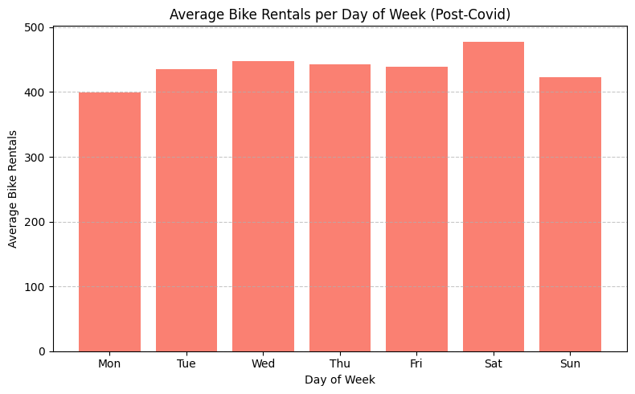
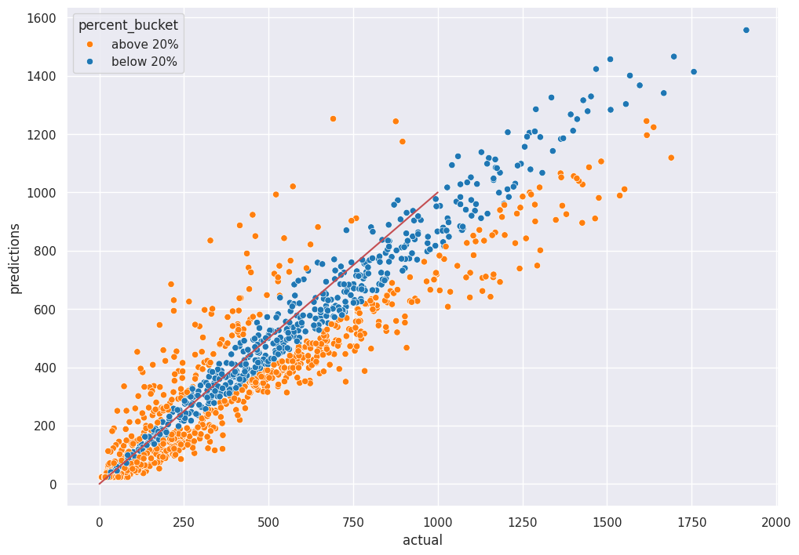

Bike Rentals Prediction Case Study
Bike Rentals Prediction Case Study
Project Summary
This project aimed to predict hourly bike rental demand using deep learning techniques applied to time-series data spanning 2011 through 2024. Key objectives included capturing behavioral and seasonal patterns, leveraging cyclical feature transformations, and testing generalization via a forward-chaining holdout strategy. The true holdout period for testing was the final two months of the dataset: November and December of 2023.
Tools & Technologies
- Python for scripting and modeling
- TensorFlow / Keras for deep learning model architecture and training
- Pandas & NumPy for data wrangling and numerical operations
- Scikit-learn for preprocessing pipelines and regression metrics
- Matplotlib for exploratory data visualizations
- Quarto for documentation and web rendering
Key Techniques Used
Feature Engineering
- Created contextual and temporal encodings, including
covid_phase,holiday,is_weekend, and cyclical encodings ofhour,month, andday_of_yearusing sine and cosine transforms. - Dropped redundant variables to reduce multicollinearity and simplify the model’s feature space.
Neural Network Design & Training
- Implemented a 3-layer feedforward neural network (Dense 128 → 64 → 16) with ReLU activations.
- Incorporated dropout layers (0.1, 0.4, 0.4) and batch normalization to improve generalization and prevent overfitting.
- Used ExponentialDecay for learning rate adjustment, along with early stopping and model checkpointing.
Evaluation Protocol
- Assessed performance using MAE, RMSE, Median AE, and R².
- Stratified evaluation by pre-/post-December 20th periods to observe predictive drift near holiday anomalies.
- Supplemented quantitative metrics with residual plots and error band visualizations.
Data Split Strategy
- Training included all observations prior to October 31.
- November and December of 2023 were strictly withheld as a realistic holdout set.
- This forward validation strategy simulates production deployment in time-sensitive forecasting scenarios.
Key Insights
Redundant Feature Elimination

Figure 1. Correlation Heatmap — Dropping feels_like_c due to perfect correlation with temp_c
A heatmap of Pearson correlations revealed that feels_like_c provided no additional signal beyond temp_c, exhibiting a coefficient of 1.00. The variable was removed to streamline the model and mitigate overfitting risk from redundant predictors.
Importance of Cyclical Encoding
Time-based features exhibit clear periodicity (e.g., hourly rush patterns, seasonal transitions). Using sine and cosine encodings allowed the model to preserve cyclical continuity (e.g., 23:00 to 00:00) and improved its ability to generalize temporal transitions.
Architecture Optimization
The best-performing model consisted of three dense layers using ReLU activation. Dropout and batch normalization layers were added progressively to optimize the trade-off between learning capacity and regularization. The architecture was refined through a combination of manual tuning and validation loss tracking.
Strategic Holdout Period
Holdout data from November and December 2023 allowed for rigorous post-training evaluation. Notably, prediction accuracy declined slightly after December 20 due to holiday-related behavior shifts not captured during training. This reinforces the need for adaptive retraining when encountering high-season anomalies.
Operational Insight: Maintenance Window

Figure 2. Post-COVID Hourly Rentals — Optimal Maintenance Hours Between 2:00–5:00 AM

Figure 3. Weekday Demand Breakdown — Mondays Exhibit Consistently Lowest Usage
Behavioral trend analysis post-COVID highlighted minimal rider activity between 2:00 AM and 5:00 AM. This window, especially on Mondays, presents a valuable operational opportunity for off-peak maintenance and fleet rotation without interrupting user demand.
Results Summary
- RMSE: 141.30
- MAE: 97.10
- Median AE: 64.59
- R² (Full): 0.859
- R² Pre-21st: 0.894
- R² Post-20th: 0.780
- Predictions within 5%: 10.38%
- Predictions within 10%: 21.09%
- Predictions within 20%: 42.25%
The model achieved a strong balance between generalization and accuracy, particularly on stable demand periods. Although accuracy dipped during holiday weeks, its core temporal structure allowed for reliable planning and infrastructure forecasting under normal conditions.
Visual Results

Figure 4. Actual vs. Predicted — Holdout Set (November-December 2023)

Figure 5. Residual Plot — Colored by Error Band
Supplementary Materials
Final Assets
- Final model saved as:
bike_model_covid.keras
- Scaler object saved as:
bike_scaler_covid.pkl
- Notebook for full training/prediction pipeline: Google Colab Link
Next Steps
Future improvements could include: - Incorporating external data (e.g., public events and bike station availability) - Testing LSTM or Transformer architectures for sequential temporal modeling - Automating retraining pipelines for weekly data ingestion and redeployment - Improving prediction confidence intervals for stakeholder-facing dashboards